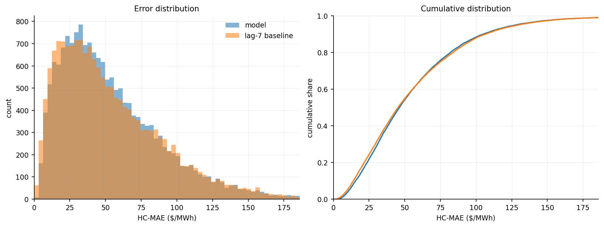
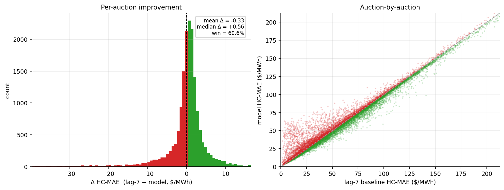
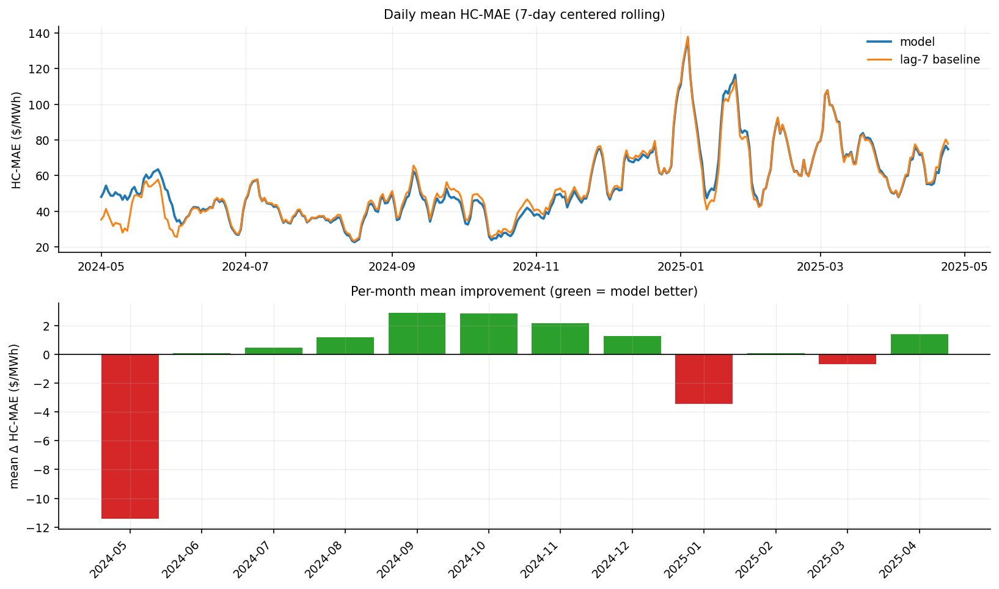
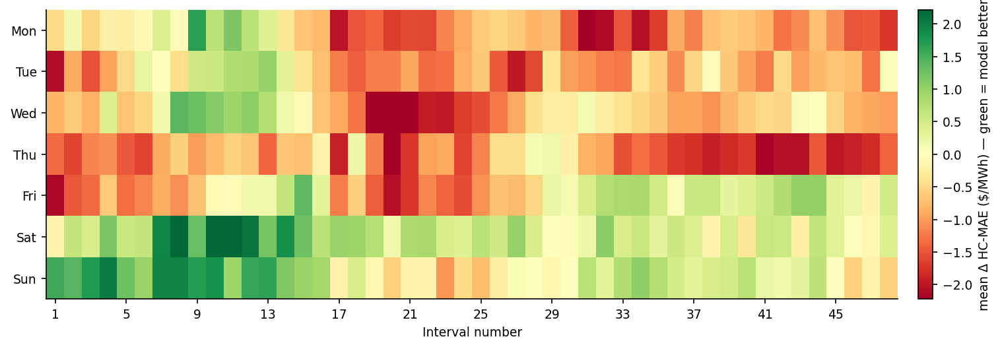
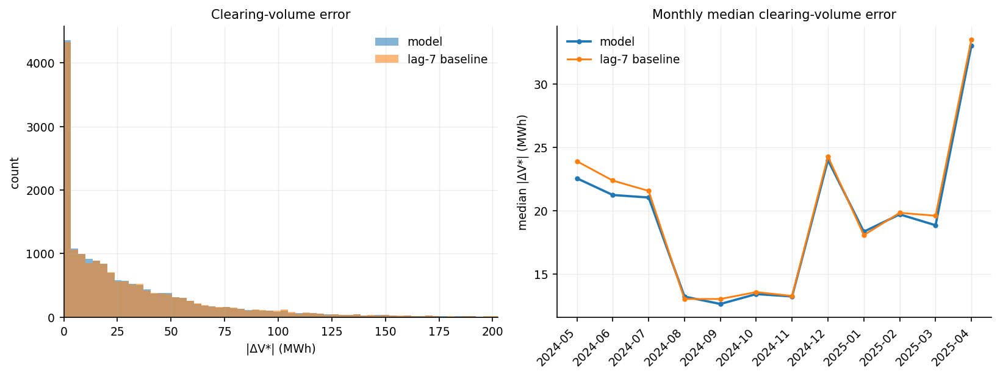
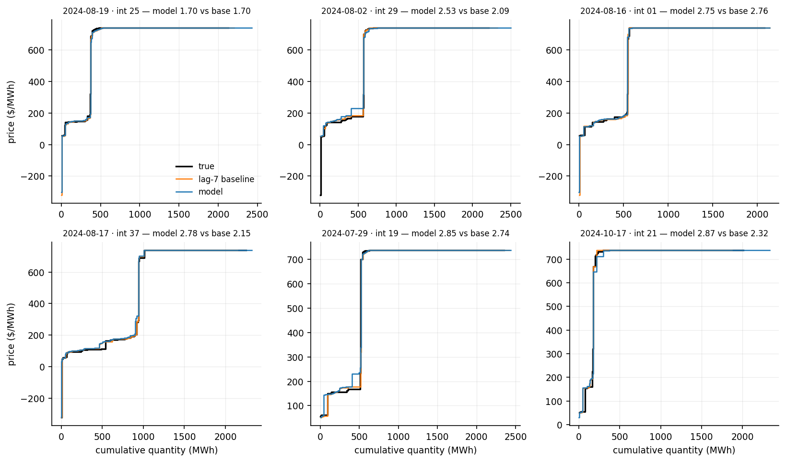
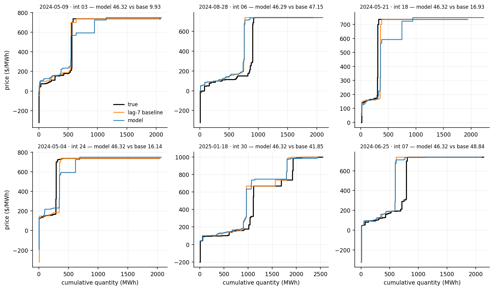
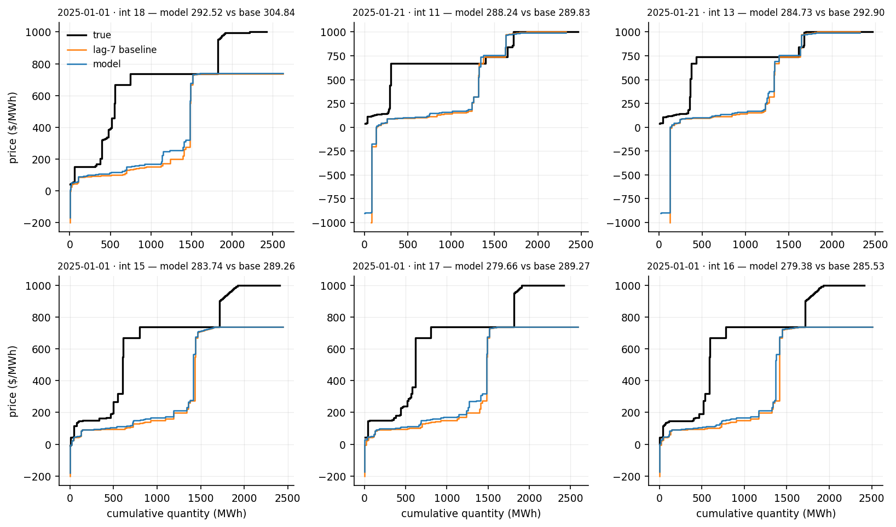

The model mixes two curves with one weight per test month.
The two candidates are the lag-7 baseline curve and the curve returned by vgrid.rolling_ridge_exog_split of the same scenario. A weight w between 0 and 1 sets the mix: w = 1 keeps the baseline curve and w = 0 keeps the retrieval curve. For a weight strictly between 0 and 1, the two curves are read at every break-point of both curves and their prices are averaged with weights w and 1 - w. The blended curve therefore spans the volume range of both curves, and it ends at the later of the two last edges. At w = 1 and w = 0 the original curve is returned unchanged.
The weight is picked again at the start of every test month, from the grid 0 to 1 in steps of 0.05. It is the grid value with the smallest mean HC-MAE between the blended curves and the true curves of the earlier auctions, which are the auctions dated from 1 November 2023 to the first day of the month minus 7 days. When there are more than 3,000 earlier auctions, the grid is scored on a fixed random subsample of 3,000 of them. The month's weight is then used for all its auctions.
7-day-ahead · test 2024-05-01 → 2025-04-24 · 17,232 auctions · reference: lag-7 baseline
| This model | lag-7 baseline | |
|---|---|---|
| Mean HC-MAE ($/MWh) | 55.16 | 54.83 |
| Median HC-MAE ($/MWh) | 46.30 | 45.35 |
| Win % vs lag-7 | 60.6% | - |
| Mean |ΔV*| (MWh) | 32.50 | 33.66 |
| Median |ΔV*| (MWh) | 18.35 | 18.75 |
| Mean |ΔP*| ($/MWh) | 28.52 | 31.48 |
| Median |ΔP*| ($/MWh) | 1.93 | 2.06 |




The true demand curve is crossed with the predicted supply curve, and the error is how far this moves the clearing point (V*, P*).
| This model | lag-7 baseline | |
|---|---|---|
| Mean |ΔV*| (MWh) | 32.50 | 33.66 |
| Median |ΔV*| (MWh) | 18.35 | 18.75 |
| Win % on |ΔV*| | 16.0% | - |
| Mean |ΔP*| ($/MWh) | 28.52 | 31.48 |
| Median |ΔP*| ($/MWh) | 1.93 | 2.06 |
A few price-floor auctions make the mean of |ΔP*| large, so the median is the summary.



